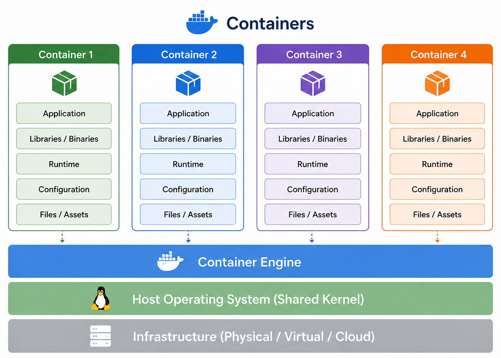

What a container controls
A container is an isolated process with its own view of files, processes, and configuration. On Linux, containers share the host kernel rather than booting a guest kernel.

Image and container
Image
A reusable set of filesystem contents and runtime configuration. It can exist locally and can also be distributed through a registry.
Container
A runtime instance created from an image. It adds a writable container layer while it exists.
Why filesystem isolation matters
The developer may store a project anywhere on the host. The image can place the application at a stable internal path such as /app. It can also include Python, the tested Python packages, and curl. Another user starts from those recorded contents instead of recreating each host path and installation manually.
Installing a package inside a container changes that container's filesystem, not the host filesystem. A stopped container remains until it is removed. For one-off runs, docker run --rm ... removes the container after it exits.
Container and VM: the essential distinction
| Container | Virtual machine | |
|---|---|---|
| Kernel | Shares the Linux host kernel | Boots a guest kernel |
| Typical startup | Fast process startup | Boots an operating system |
| Boundary | Process and user-space isolation | Separate guest operating system |
Docker Desktop provides a Linux environment behind the scenes on macOS and Windows, because Linux containers need a Linux kernel.